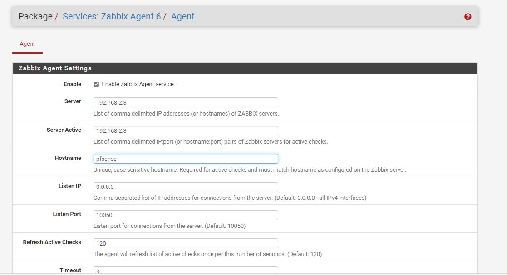
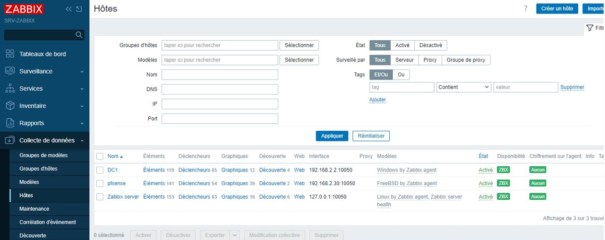

Étape 4 sur 4
Agent pfSense et supervision des hôtes
Superviser le pare-feu et le contrôleur de domaine avec des modèles prêts à l'emploi.
1. Agent sur pfSense
Dans System > Package Manager, installation du paquet zabbix-agent6. Dans Services > Zabbix Agent 6 : activation du service et rattachement à l'adresse du serveur Zabbix, avec le nom d'hôte pfsense.
2. Règle de pare-feu
Ajout d'une règle qui autorise le port 10050 (agent Zabbix) depuis le serveur Zabbix vers le pare-feu.
3. Création des hôtes
Dans Data collection > Hosts : création des hôtes DC1 et pfSense.
4. Modèles de supervision
Application du modèle « Windows by Zabbix agent » au contrôleur de domaine et d'un modèle FreeBSD / pfSense au pare-feu. La communication est validée quand l'état de chaque hôte passe au vert.
Captures



Compétences mobilisées
- Supervision
- Agents et modèles
- Filtrage de ports